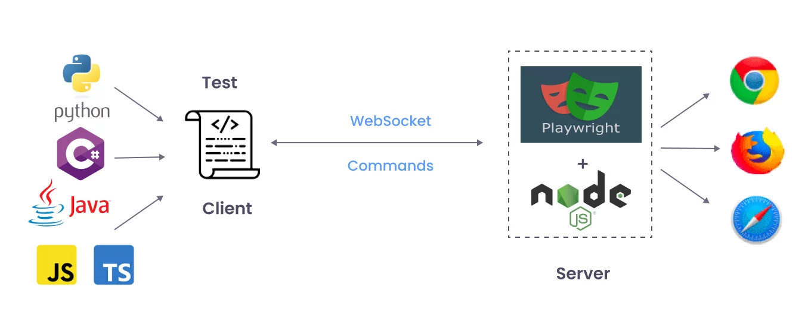

Playwright の概要
Playwright は、Microsoft が開発したオープンソースの Web 自動化テストフレームワークで、Chromium、Firefox、WebKit の3大ブラウザエンジンでエンドツーエンドテストを行うために使用されます。
簡単に言うと、プログラムでブラウザを操作できるようにするツールです。仮想ユーザーと考えることができ、人間のように Web ページ上でさまざまな操作（ボタンのクリック、フォームの入力、別のページへの移動、スクリーンショット、Web コンテンツの保存など）を行うことができます。

Playwright は Microsoft がオープンソースで提供するモダンなブラウザ自動化フレームワークです。少ないコードで Chromium（Chrome/Edge）、Firefox、WebKit（Safari エンジン）上で人間のブラウザ操作（Web ページを開く、クリック、入力、ドラッグ＆ドロップ、ファイルアップロード、スクリーンショット/PDF、ログ記録と再生）を自動化できます。最も一般的な用途はエンドツーエンド（E2E）テストで、軽量なスクレイピングやワークフロー自動化にも使用できます。
Playwright は JS/TS、Python、Java、.NET 向けの多言語 SDK を提供しており、JS/TS + Playwright Test が最も主流な組み合わせです。
対応ブラウザ
| ブラウザ | レンダリングエンジン | プラットフォームサポート |
|---|---|---|
| Chromium | Blink（Chrome と同じ） | Windows / macOS / Linux |
| Firefox | Gecko | Windows / macOS / Linux |
| WebKit | WebKit（Safari と同じ） | Windows / macOS / Linux |
Playwright は公式ブラウザのテスト版（Google Chrome ではなく Chromium、Safari ではなく WebKit）を使用しますが、動作は公式版とほぼ同じです。
Playwright の主なユースケース
Playwright はテストだけでなく、その強力な機能によりさまざまな分野でも活躍します。
- エンドツーエンド（E2E）テスト：これは Playwright の最も主要な用途です。実際のユーザーの利用シナリオをシミュレートし、Web サイトの最初から最後までの一連の流れが正常に動作するかをテストできます。
- Web スクレイピングとデータ取得：Web ページからデータを自動で取得したいなら、Playwright を使えば簡単に実現できます。JavaScript で動的に読み込まれるコンテンツもレンダリングできるため、従来のクローラーツールよりも強力です。
- Web ページ自動化：自動チェックイン、ファイルの一括ダウンロード、レポートの記入など、繰り返し行う Web 操作はすべて Playwright で自動化できます。
- スクリーンショットと PDF の生成：Playwright を使用すると、Web ページのスクリーンショットを撮ったり、Web ページのコンテンツを PDF ファイルとして保存したりできます。
Playwright で何ができるのか？
一言でまとめると：人間がブラウザでクリックできるものは、Playwright でほぼすべて自動化できます。。
具体的な機能には以下があります：
- マルチブラウザサポート：1つのコードで、Chromium（Chrome/Edge）、Firefox、WebKit（Safari）上で同時に実行できます。
- クロスプラットフォーム実行：Windows、Linux、macOS をサポートします。
- クロス言語対応：JavaScript/TypeScript だけでなく、Python、C#、Java もサポートします。
- モダンな Web ページへの対応：シングルページアプリケーション（SPA）、動的読み込み、iframe、複数タブに対して安定した処理を提供します。
例を挙げると：
「ログイン」機能をテストするとします。
- 手動テスト：ブラウザを開く → アカウントとパスワードを入力 → ログインをクリック → ページを確認する。
- Playwright テスト：スクリプトを書けば、上記の操作を自動で完了し、何百回でも楽に繰り返し実行できます。
Playwright vs 他のテストツール
Playwright vs Puppeteer
| 比較項目 | Playwright | Puppeteer |
|---|---|---|
| ブラウザサポート | Chromium + Firefox + WebKit | Chromium / Firefox のみ（限定的） |
| テストランナー | 完全な Test Runner を内蔵 | 内蔵なし、Jest/Mocha と組み合わせる必要あり |
| 自動待機 | 全面的に内蔵 | 手動処理が必要 |
| テストの分離 | Browser Context をネイティブサポート | 自分で管理する必要あり |
| モバイルエミュレーション | 完全なデバイスエミュレーション | 基本的なデバイスエミュレーション |
| 保守元 | Microsoft |
Puppeteer は簡単なブラウザ自動化スクリプトに適しています。
Playwright は機能の充実度とテスト体験の両方で全面的に優れており、テストシナリオでの第一の選択肢です。
Playwright vs Cypress
| 比較項目 | Playwright | Cypress |
|---|---|---|
| アーキテクチャ | プロセス外で実行し、ブラウザを完全に制御 | ブラウザ内部で実行（サンドボックスによる制限あり） |
| 複数タブ / 複数ウィンドウ | 完全サポート | 非サポート |
| 複数ブラウザ | Chromium + Firefox + WebKit | Chromium 系のみ + 実験的な Firefox/WebKit |
| iframe サポート | ネイティブサポート | 制限あり |
| 並列実行 | ネイティブサポート、追加設定不要 | 有料の Dashboard が必要 |
| ネットワークインターセプト | 完全なリクエスト/レスポンスのインターセプトと変更 | Stub または Spy のみ可能 |
| 実行速度 | 一般的に速い | 一般的に遅い（ブラウザ内実行のオーバーヘッド） |
Cypress は開発者体験が優れており、デバッグインターフェースも使いやすいです。
複数ブラウザのサポート、複数タブの操作、または大規模テストスイートの並列実行が必要な場合は、Playwright の方が適しています。
Playwright vs Selenium
ブラウザ自動化と言えば、多くの人が最初に思い浮かべるのはSelenium。では、Playwright はそれと比べて何が違うのでしょうか？
| 特徴 | Selenium | Playwright |
|---|---|---|
| 登場時期 | 2004 年、歴史が長い | 2020 年、後発の新星 |
| ブラウザサポート | Chrome、Firefox、Safari、IE など | Chromium、Firefox、WebKit（モダンブラウザを完全カバー） |
| API 設計 | 初期のインターフェースが多く、やや複雑 | API は簡潔で現代的、学習コストが低い |
| 実行速度 | 比較的遅く、待機問題に遭遇しやすい | より速く、タイムアウトが少ない |
| 特別な機能 | 比較的強力で、エコシステムが成熟している | スクリーンショット、動画録画、ネットワークリクエストのモックをネイティブサポート |
一言で比較すると：
- Selenium は「老舗の万能選手」のようなもので、歴史が長く、エコシステムも巨大です。
- Playwright は「若くて小さいながら強力な大砲」のようなもので、速度が速く、モダンな Web 機能をサポートし、API もより親しみやすいです。

どのようなシーンに適しているのか？
Playwright はテストだけでなく、さまざまなシーンでも活用できます：
- フロントエンドテスト：ボタン、フォーム、ナビゲーションなどが正常に動作するかを自動テストします。
- リグレッションテスト：新機能のリリース前に、全サイトのテストケースを実行し、既存機能に問題がないことを確認します。
- データ収集（クローラー）：動的な Web ページを取得します（スクロールしないと表示されないデータなど）。
- Web ページのスクリーンショット & PDF：ページのスクリーンショットや PDF を生成します（レポート生成など）。
- ワークフロー自動化：反復的な操作を自動化します（自動ログイン、フォームの一括入力など）。
なぜ Playwright を学ぶべきか？
- 初心者にやさしい：インストールが簡単で、数行のコードで実行できます。
- API は直感的：〜を使うだけで
page.click()、page.fill()Web 操作を完了できます。 - 学べば稼げる：フロントエンド開発、テストエンジニア、さらにはデータ収集の副業でも使われます。
- コミュニティが活発：Playwrightは更新が速く、ドキュメントが明確で、問題に直面したときに解決策を見つけやすいです。
まとめると一言：
Playwright = ウェブページを自動で開き、ボタンをクリックし、フォームを入力し、スクリーンショットを撮る「スマートロボット」。テストにも使えるし、クローラーにもなれるし、自動化ツールにもなります。
なぜ Playwright を選ぶのか？
初心者にとって、Playwrightにはいくつかの非常に魅力的な特徴があります：
- 自動待機：これはPlaywrightの最も強力な機能の一つです。自動化スクリプトを書くとき、特定の要素が読み込まれたり表示されたりするのを待つ必要がよくあります。Playwrightにはインテリジェントな自動待機メカニズムが組み込まれており、それによって自動的に待機し要素が利用可能になるまで待ちます。面倒な手動の
sleep或wait関数を追加する必要はありません。これにより、コードはより簡潔で安定します。 - 高速かつ信頼性が高い：Playwrightの実行速度は非常に速いです。中間のプロトコルを介さず、ブラウザと直接通信するためです。この直接接続により、操作の安定性と信頼性が保証されます。
- 強力なAPI：PlaywrightのAPIは非常に使いやすく設計されています。豊富な操作メソッドを提供しており、ポップアップの処理、ファイルのアップロード、新しいタブの管理など、複雑なWebページ操作を簡単に扱うことができます。
- テストフレームワーク内蔵：Playwrightチームは強力なテストランナーも提供しています
@playwright/test。このフレームワークには、アサーションライブラリ、テストレポート生成器、並列実行などの高度な機能が組み込まれており、テストケースの作成と管理が非常に便利になります。
Playwrightの最も中核的な利点は、クロスブラウザ対応です。それは同時に制御できますChromium（Google Chrome と Microsoft Edge）、FirefoxとWebKit（Safariのエンジン）という3つの主要ブラウザを制御できます。つまり、1セットのコードを書くだけで、これらすべてのブラウザで自動化スクリプトを実行でき、重複作業を大幅に削減できます。
Playwright の4つの中核機能
1. 真のクロスブラウザサポート
Playwrightは、Chromium、Firefox、WebKitの3大ブラウザエンジンを同時にサポートする唯一のテストフレームワークです。
各ブラウザには専用に維持されたドライバ層があります（ChromiumはCDP、FirefoxはJugglerプロトコル、WebKitはPlaywrightカスタムプロトコルを使用）。基盤となる操作の安定性と一貫性を保証します。
2. 自動待機メカニズム
Playwrightは各操作を実行する前に、要素が操作可能な状態（DOMに接続され、表示され、安定し、イベントを受信でき、有効化されている）になるまで自動的に待機します。
アサーションも条件が満たされるかタイムアウトするまで自動的に再試行されます。
これは従来のテストで最も一般的な不安定なテスト（flaky tests）問題を根本的に解決します。
3. テストの分離
PlaywrightはBrowser Contextの概念を導入しました。各テストは独立したブラウザコンテキスト（全新のブラウザプロファイルに相当）で実行されます。
各contextは独立したlocalStorage、sessionStorage、cookiesを持ち、テスト間で相互に影響しません。
contextの作成コストは極めて低く（ミリ秒単位）、毎回新しいブラウザインスタンスを起動するよりもはるかに高速です。
4. 多言語サポート
PlaywrightはJavaScript/TypeScript、Python、Java、.NETの4言語のAPIを提供しています。すべての言語が同じ設計思想と機能を共有しています。
| 言語 | インストールコマンド | 適用シーン |
|---|---|---|
| JavaScript / TypeScript | npm init playwright@latest | フロントエンドチーム、Node.jsプロジェクト |
| Python | pip install playwright | Pythonエコシステム、AI/MLプロジェクト |
| Java | Maven/Gradle依存関係 | エンタープライズJavaプロジェクト |
| .NET | NuGetパッケージ | マイクロソフト技術スタック |
Playwright 製品マトリックス
Playwrightは単一のツールではなく、複数のコンポーネントを含むプラットフォームです：
| 製品 | 用途 | インストール方法 |
|---|---|---|
| Playwright Test | 完全なエンドツーエンドテストフレームワーク | npm init playwright@latest |
| Playwright Library | ブラウザ自動化スクリプトライブラリ | npm i playwright |
| Playwright MCP | AIエージェントのブラウザ制御（MCPプロトコル） | npx @playwright/mcp@latest |
| Playwright CLI | コーディングエージェントのコマンドラインツール | npm i -g @playwright/cli@latest |
| VS Code拡張機能 | エディタ内でのテストデバッグと録画 | VS Code Marketplace |